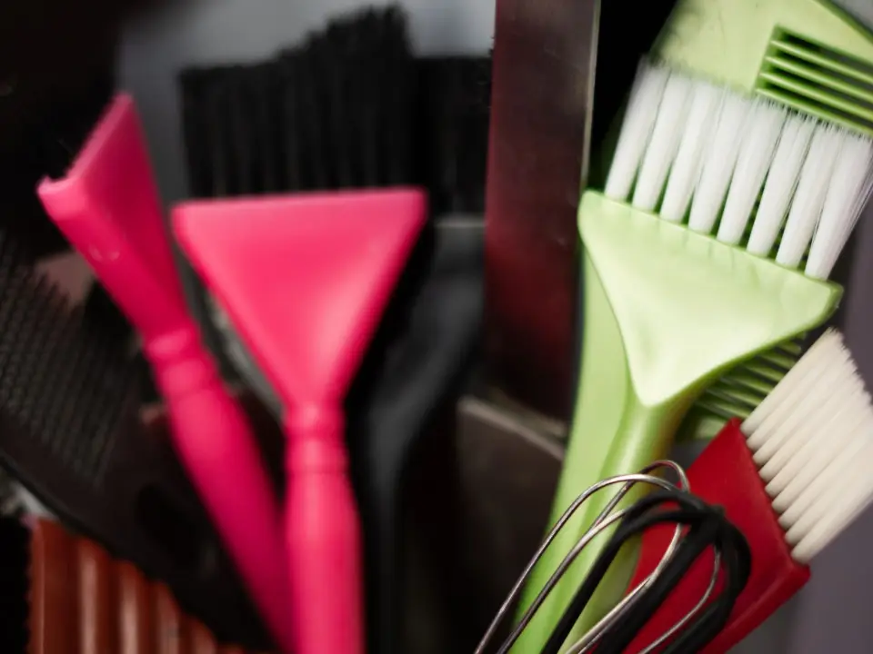

02La carte
Cinq services, leur durée et leur prix
La durée écrite est celle qui est réellement bloquée dans l’agenda — pas une moyenne optimiste. Les prix s’entendent hors taxes, pour une longueur qui va jusqu’aux épaules ; au-delà, le supplément est nommé à la consultation, jamais à la caisse.
Chaque réglette ci-dessous est graduée de 0 à 4 h, un trait tous les quarts d’heure. Le trait plein est la plage réservée pour vous.
45′
Durée réservée
Coupe
On coupe sur cheveu humide, on vérifie une fois sec, et on reprend s’il faut. La reprise fait partie du rendez-vous, pas d’un deuxième.
- Consultation de cinq minutes sur cheveu sec, avant le lavage
- Lavage, coupe, séchage et mise en forme
- Retouche de contour dans les dix jours, sans frais
65 $
Prix annoncé
avant de commencer
90′
Durée réservée
Couleur
Une couleur qui reprend les racines et rien d’autre. La première couleur passe toujours par la consultation ; le montant est fixé là, et il ne bouge plus.
- Application aux racines, temps de pose minuté
- Lavage, revitalisant sur les longueurs, séchage
- La formule est notée à votre dossier pour la fois suivante
125 $
Consultation
obligatoire au premier
150′
Durée réservée
Mèches et balayage
On travaille par séance. Un blond qui demande trois séances est annoncé comme trois séances dès la consultation, pas découvert en cours de route.
- Application mèche par mèche, puis patine pour poser le ton
- Lavage, soin, séchage et mise en forme
- Le plan complet est écrit : combien de séances, à quel intervalle
190 $
À partir de
par séance

Pinceaux à mèches et peignes · poste de couleur
30′
Durée réservée
Soin du cheveu
Un soin ne répare rien de cassé. Il rend le cheveu plus facile à peigner, plus souple, et il retarde la casse. On le dit comme ça, et pas autrement.
- Diagnostic sur trois zones : racine, longueur, pointe
- Lavage, soin posé au bac ou au fauteuil selon l’état
- Rinçage tiède, séchage léger
55 $
Seul
ou ajouté à une coupe
40′
Durée réservée
Coiffage
Pour une occasion, ou pour rien. On ne fait pas tenir une coiffure trois jours ; on la fait tenir la soirée, et on vous dit comment la défaire sans arracher.
- Lavage, séchage, mise en forme au fer ou à la brosse
- Fixation légère, jamais figée
- Attaches et chignons sur cheveu de la veille, plus tenace
60 $
Sans coupe
ni couleur
Ce qui n’est pas sur cette carte ne se fait pas ici : pas d’extensions, pas de lissage permanent, pas de perruque. Cinq services, faits au complet, valent mieux que douze faits à moitié.